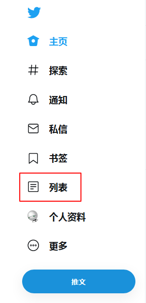
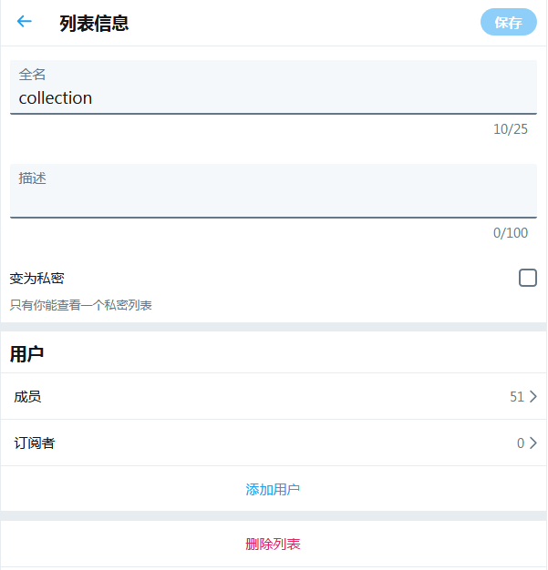
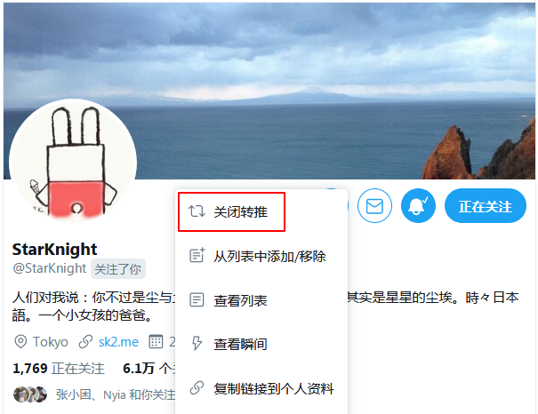
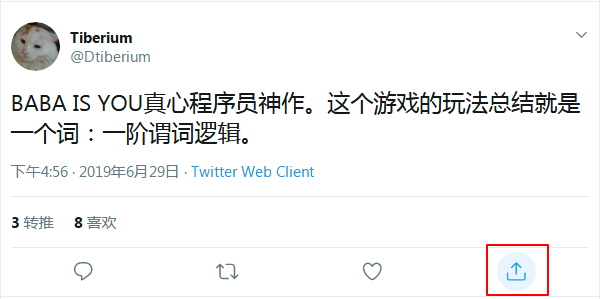
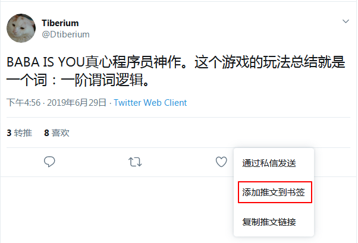
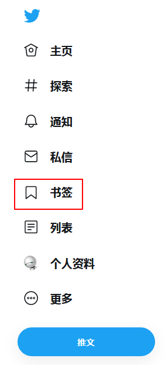
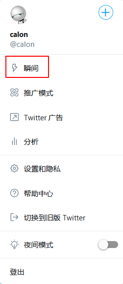
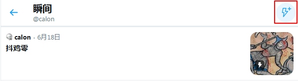
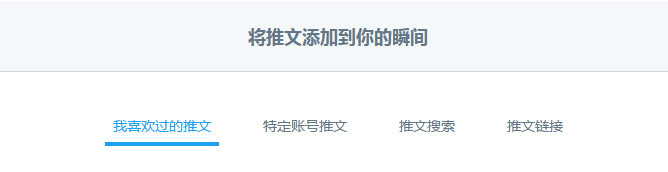
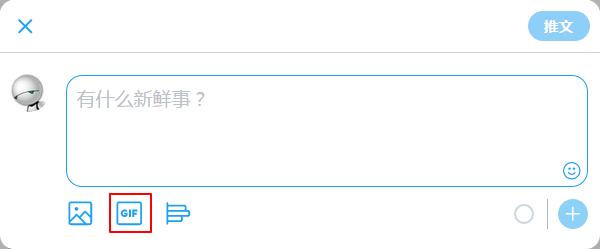

• 大杂烩
Twitter 使用技巧介绍
Twitter 有一些隐藏比较深，或者大多数用户没有兴趣尝试的功能，其实好用又方便。
我介绍几个不错的技巧，也许能让你使用 Twitter 的体验更好一些。
以下推友资料均为未锁推状态，仅用于演示功能。
- 列表

类似于分组的功能，将一类用户归集到一个列表中，集中阅读他们的推文。
最方便的是，即使你没有关注对方，也可以加入列表中。
合理管理列表，可以精简主页内容。
进入列表功能页，可以建立和维护多个列表。
如果你不希望其他人看到自己的列表，可以设置为私密列表。

列表维护界面上可以直接添加用户，也可以在用户的资料页中，进行添加或移除列表的操作。
- 关闭转推
有的用户如果转推太多，会导致主页上多出很多重复或你不感兴趣的内容，取消关注吧，又想看到他自己发的推。
这个时候可以在其资料页上，进行关闭转推操作。

- 书签
Twitter 以前转推才会给大家看到，收藏则是默默操作，其他用户只能在你的资料页中，看到历史的收藏内容。
而现在的转推、收藏功能比较模糊，收藏的内容也会进入关注者的主页时间线。
有的用户以为自己只是默默收藏，实际上可能大家都看到了，这就非常尴尬，有时甚至是公开处刑。
有的时候，收藏操作时的红心标记可能会表达出支持、赞同的态度，你可能不太愿意造成他人误解，仅仅只是想收藏而已。
于是 Twitter 又增加了书签功能，用于他人不可见的收藏。
在推文的分享按钮中有书签按钮。


在侧栏有所有书签内容的入口。

- 瞬间
瞬间是 Twitter 曾经想推但实际乏人问津的功能。
它的作用类似于相册，将分散的指定推文组织联系起来，形成一个小专题。
比如说，旅游过程中发布的一系列推文，介绍某个产品的几句话，与其他用户共同讨论的话题串，关于某个事件的新闻推，等等，都可以汇聚起来，形成一个瞬间。
也许大多数人用不到，但对有需求根据主题组织推文的人来说，这个还是挺不错的。
依然是在侧栏进入瞬间的页面。

然后点击右上角的小图标，添加瞬间。

可以从多个渠道添加推文，自己的和别人的都行。

- 搜索 GIF
这应该是挺多人知道的功能了，但最近发现还是有不少人不了解。
就是在发推时，可以快速搜索和插入 GIF 动图到回复中。
相当于在线版的即搜即用表情包。
